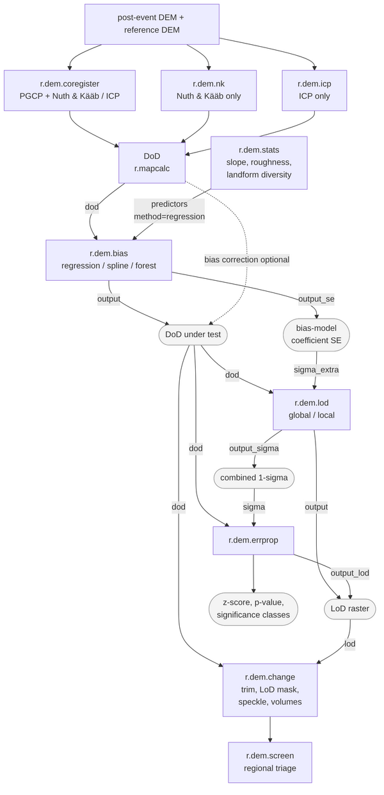
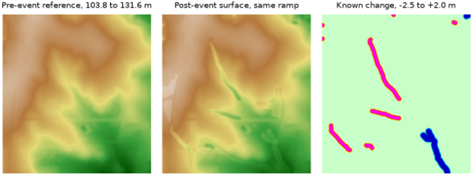

r.dem.lod and r.dem.errprop compose rather than compete. r.dem.lod builds the combined 1-sigma surface from the windowed dispersion, the long-wavelength excess over floor, and any sigma_extra rasters (the bias-model coefficient SE from r.dem.bias output_se is the usual one), and writes it to output_sigma. That raster is the intended sigma input to r.dem.errprop, which converts it into z-scores, p-values, and significance classes. Either tool's LoD raster drives the lod input of r.dem.change.
Every sigma entering r.dem.errprop must be independent of the DoD being tested. A windowed dispersion of the same map inflates sigma exactly where change is real and suppresses its own significance, so r.dem.stats metric=error_sigma_local applied to the DoD under test is not a valid uncertainty source for it. Note also that r.dem.lod output_sigma merges a per-cell random component with a spatially correlated one, so it must not be aggregated to volume uncertainty by sqrt(N) averaging over the volumes r.dem.change reports.
DoD cleanup, LoD masking, and volumetric summary all live in r.dem.change as a single pipeline; there is no separate DoD tool.
The figures in these manuals colour elevation differences with erosion in red and deposition in blue, following the convention used for GRASS erosion modelling and matching the categorical output of r.dem.errprop. Erosion runs yellow to orange to red to magenta as it deepens, deposition runs cyan to teal to blue, and near-zero differences are pale green. To apply it to a DoD, scale the breaks to the range of the map:
r.colors map=dod_debiased rules=- << EOF -3.0 #FF00FF -1.8 #FF0000 -0.9 #FF7F00 -0.3 #FFFF00 0.0 #C8FFC8 0.3 #00FFFF 0.9 #00BFBF 1.8 #0000FF 3.0 #000080 nv #F0F0F0 EOF
The following chart shows how the tools work together. Rectangles are tools, rounded nodes are rasters, and edge labels are the option keys that carry each raster:

The chart is generated from r_dem_workflow.mmd.
The examples in this manual and in the individual tool manuals share one scene, built from the North Carolina sample dataset so that every command can be run as written. A known change surface is added with r.earthworks, a known rigid offset is applied, and known systematic bias fields are added, so each tool's output can be compared with the answer.
The notebook r_dem_examples.ipynb, next to this manual page, runs the whole
walkthrough and regenerates every figure in these manuals.
The change follows the drainage network, as a flood's would: scour along the upper channel and deposition along the lower one. Derive the network first:
g.region raster=elev_lid792_1m
r.watershed elevation=elev_lid792_1m accumulation=accumulation
r.stream.extract elevation=elev_lid792_1m accumulation=accumulation \
threshold=8000 stream_raster=streams
r.mapcalc "channel_scour_r = if(streams && elev_lid792_1m > 116 \
&& landcover_1m != 2, 1, null())"
r.mapcalc "channel_fill_r = if(streams && elev_lid792_1m < 110 \
&& landcover_1m != 2, 1, null())"
r.to.vect -s input=channel_scour_r output=channel_scour type=line
r.to.vect -s input=channel_fill_r output=channel_fill type=line
Both reaches are deliberately kept out of forest. r.dem.bias method=forest cannot distinguish a canopy bump from real deposition, so change under canopy would be removed by that stage rather than measured.
Now cut the upper reach and fill the lower one. The -p flag reports the volume moved, which is the truth r.dem.change has to recover at the end:
r.earthworks -p elevation=elev_lid792_1m earthworks=dsm_scoured \
operation=cut mode=relative lines=channel_scour z=-2.5 \
function=linear linear=0.35 flat=5
r.earthworks -p elevation=dsm_scoured earthworks=dsm_event \
operation=fill mode=relative lines=channel_fill z=2.0 \
function=linear linear=0.30 flat=10
r.mapcalc "change_truth = dsm_event - elev_lid792_1m"
Add a survey error model. Each component is what one r.dem.bias method removes: a smooth dome, a roughness-correlated term, and a canopy bump over forest. The uncorrelated noise sets the level of detection:
r.dem.stats input=elev_lid792_1m output=roughness \
metric=roughness_std window=13
r.mapcalc "bias_dome = 0.25 * (1 - ((x() - 638650) * (x() - 638650) \
+ (y() - 220375) * (y() - 220375)) / (400.0 * 400.0))"
r.mapcalc "bias_canopy = if(landcover_1m == 2, 1.5, 0)"
r.mapcalc "bias_truth = bias_dome + 0.6 * roughness + bias_canopy"
r.surf.gauss output=noise_unit mean=0 sigma=1 seed=42
r.mapcalc "sigma_survey = 0.05 + 0.20 * roughness \
+ if(landcover_1m == 2, 0.08, 0)"
r.mapcalc "noise = noise_unit * sigma_survey"
r.mapcalc "dsm_post = dsm_event + bias_truth + noise"
r.mapcalc "dod_raw = dsm_post - elev_lid792_1m"
The noise is deliberately not uniform: it grows with surface roughness and again under canopy, as photogrammetric error does. A single detection limit cannot serve both the smooth fields and the forest, which is what makes r.dem.lod method=local worth running.
Build the masks. Three jobs need three different masks. stable_terrain is the broad, sloped, unchanged terrain the Nuth and Kääb step and the bias fits need. pgcp_roads is the flat road network the PGCP vertical step needs. stable_lod is every unchanged cell including forest: forest is stable ground for estimating uncertainty even though its canopy bump makes it useless for the Nuth and Kääb regression, and leaving it out would leave the noisiest part of the map uncharacterised:
r.mapcalc "change_foot = if(abs(change_truth) > 0.05, 1, null())"
r.mapcalc "stable_terrain = if(landcover_1m != 2 && landcover_1m != 1 \
&& isnull(change_foot), 1, null())"
r.mapcalc "stable_lod = if(landcover_1m != 1 \
&& isnull(change_foot), 1, null())"
r.mapcalc "forest = if(landcover_1m == 2, 1, null())"
v.clip -r input=streets_wake output=pgcp_roads

Finally, a separately misregistered surface for the co-registration tools, displaced by 0.65 m horizontally (0.4596 m on each axis) and 1.32 m vertically:
g.copy raster=dsm_event,tmp_shift
r.region map=tmp_shift n=220750.4596 s=220000.4596 \
e=639000.4596 w=638300.4596
g.region raster=elev_lid792_1m
r.resamp.interp input=tmp_shift output=post_shift method=bilinear
r.mapcalc "dsm_offset = post_shift + 1.32 + bias_canopy + noise"
The misregistration is kept on its own surface because a long-wavelength vertical bias is partly degenerate with a horizontal shift in the first-order Nuth and Kääb model, so a surface carrying both has no single correct co-registration answer.
Co-register, then difference, then remove the residual bias:
r.dem.coregister dem=dsm_offset reference=elev_lid792_1m pgcp=pgcp_roads \
stable_mask=stable_terrain output=dsm_coreg method=nk
r.dem.bias dod=dod_raw output=dod_spline method=spline \
stable_mask=stable_terrain bias_field=bias_spline
r.dem.bias dod=dod_spline output=dod_debiased method=forest \
mask=forest window=21
Set the detection limit, threshold the difference, and report volumes:
r.dem.lod dod=dod_debiased output=lod_global method=global \
stable_mask=stable_lod confidence=0.95
r.dem.lod dod=dod_debiased output=lod_local method=local window=21 \
stable_mask=stable_lod output_sigma=sigma_combined \
output_domain=lod_domain confidence=0.95
# The local limit is undefined in the interior of the change features,
# where no stable cell falls inside the window.
r.mapcalc "lod_filled = if(isnull(lod_local), lod_global, lod_local)"
r.dem.change -n dod=dod_debiased lod=lod_filled \
output_sig=dod_significant volume_csv=volumes.csv
r.dem.errprop dod=dod_debiased sigma=sigma_combined \
output_sigma=sigma_dod output_class=significance
Screen a wider area at a coarser resolution to decide where to look:
g.region raster=elev_lid792_1m res=10 -a
r.resamp.stats input=dod_significant output=dod_10m_masked method=average
# Blocks holding no significant cell come back NULL, which for screening
# means no change rather than no data.
r.mapcalc "dod_10m = if(isnull(dod_10m_masked), 0, dod_10m_masked)"
r.mapcalc "ndvi_change = if(abs(change_truth) > 0.5, -0.35, 0.02)"
r.dem.screen dod=dod_10m spectral_change=ndvi_change output=triage \
infrastructure=pgcp_roads hazard_output=hazard topo_threshold=1.0
{kind=link}
{kind=link}